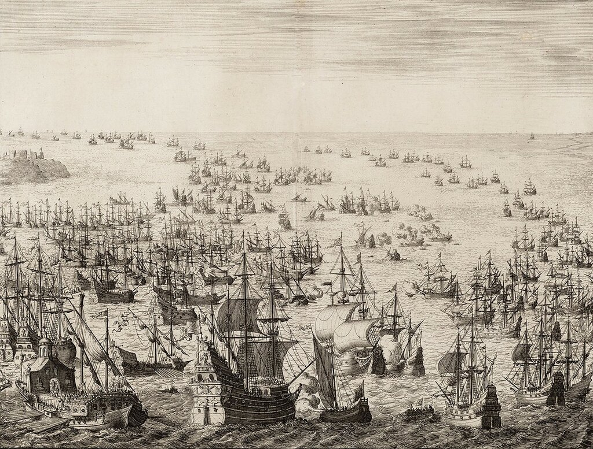
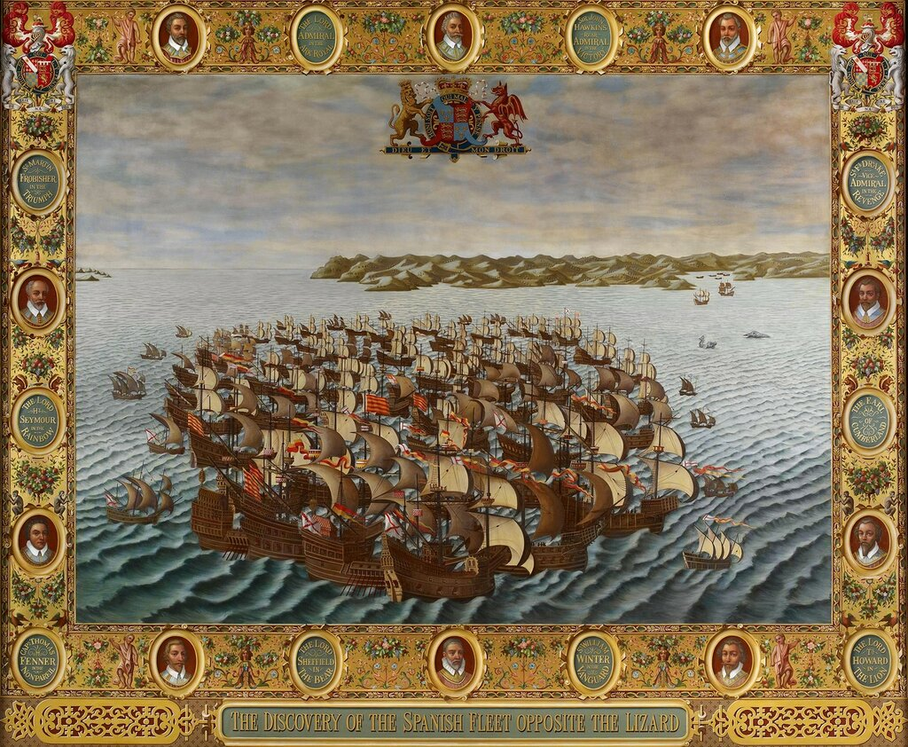
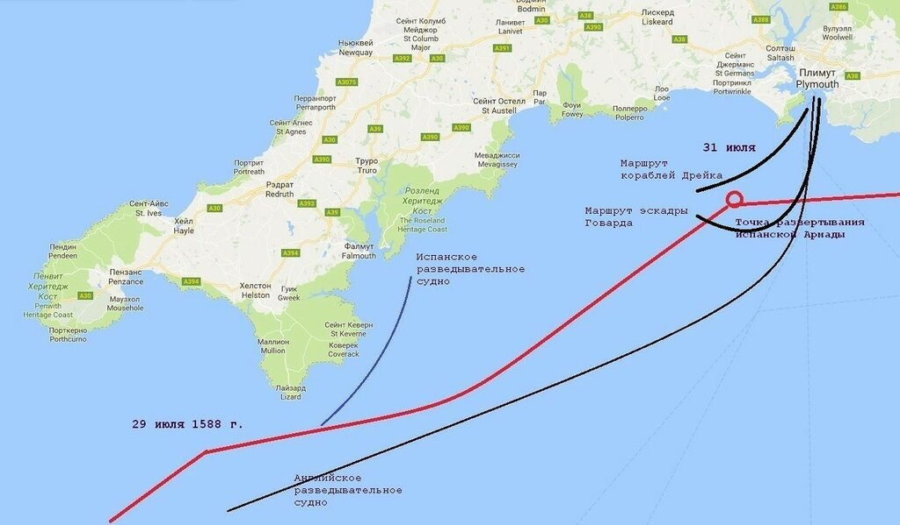
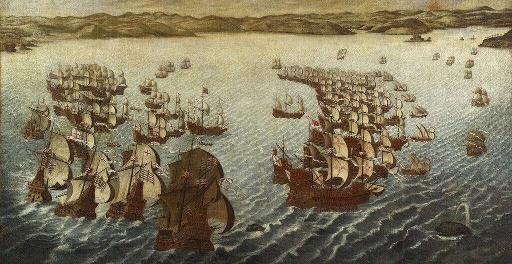
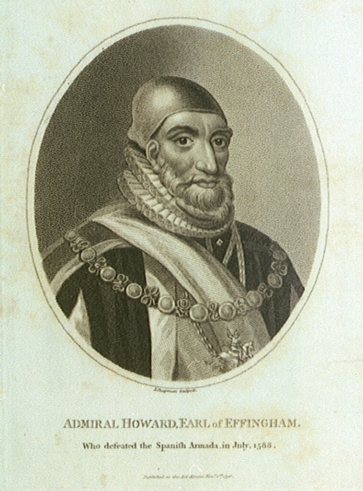

Дневник солдата (продолжение)
Вот третий здесь в военном одеянье,
С пером на шляпе красным и с усами:
Вторым служил на флоте он - и утонул
В сраженье против англичан проклятых.
М.Ю.Лермонтов. Испанцы
Продолжим чтение дневника Рекальде («Дневника солдата») о событиях экспедиции Непобедимой армады к берегам Англии.
На рассвете воскресенья 31 июля у входа в Плимут мы заметили корабли противника, которые маневрировали с целью выиграть ветер. Численность их достигала 70 единиц. Около девяти утра весь английский флот сконцентрировал огонь своих орудий на корабле вице-флагмана, галеоне Сан Хуан (San Juan), на борту которого находился адмирал Хуан Мартинес де Рекальде. Выпустив более трехсот ядер и получив в ответ сто сорок ядер от флагмана, англичане отошли, оставив нам серьезные повреждения: был перебит грота-штаг и ядро насквозь пробило фок-мачту (con las balas ... el estay mayor, y pasado el árbol de trinquete con un balaco de p[ar]te a parte)

Корабли Непобедимой армады и английского флота в бою. Работа голландского гравера Яна Лёйкена (Jan Luyken).
Примечание 6. Внимательный читатель может упрекнуть нас в том, что некоторые даты упоминаемых нами событий отличаются от тех, которые приведены в цитируемых документах. По этому поводу сделаем следующее замечание. В 1582 году папа римский Григорий XIII ввел в католических странах, в том числе и в Испании, новый календарь (названный позднее григорианским) взамен прежнего юлианского: следующим днём после четверга 4 октября стала пятница 15 октября. Разница составила 10 дней (некоторые невнимательные авторы принимают эту разницу равной 11 дням, чем вносят дополнительную путаницу в хронологию событий). Англия перешла на новый календарь лишь в 1752 году (вот тогда разница между календарями составляла действительно 11 дней). Поэтому в 1588 году все английские документы датировались по старому стилю (например, 19, 20, 21 июля и т.д.), а испанские – по новому (соответственно 29, 30, 31 июля и т.д.). Мы используем в нашем рассказе новый стиль.
Примечание 7. В дневнике содержится очень короткий отчет о первом дне сражения. Впрочем, некоторые исследователи и вовсе его пропускают, считают несущественным для кампании в целом. Между тем, именно в этот первый день проявились все оперативно-тактические задумки противников. Добавим поэтому более подробные, чем обычно, пояснения к наблюдениям автора дневника.
Появление испанских кораблей не стало неожиданным для английского флота. Еще накануне была создана сеть раннего предупреждения, в состав которой входили как береговые посты наблюдения, так и выдвинутые в море дозорные корабли англичан. Первым новость о появлении испанской Армады у мыса Лизард принес 50-тонный пинас Golden Hind, случилось это в 15.00 30 июля.

Появление испанской Армады у мыса Лизард. Копия гобелена, сгоревшего при пожаре Вестминстерского дворца в 1834 году. Ныне копии, как и прежние гобелены, украшают английскую палату лордов.
Возможно, именно этот пинас заметили корабли испанского авангарда; об этом писал в своем донесении казначей Армады Pedro Coco Calderon.
Позаботились о разведывательном обеспечении операции и испанцы. Герцог Медина-Сидония послал сабру под командованием своего доверенного офицера, хорошо знавшего английский язык, альфереса Хуана Хиля (Juan Gil) к английскому берегу. Хиль захватил в порту Фалмута судно с четырьмя местными рыбаками на борту, которые сообщили интересующую испанцев информацию о составе и местонахождении английского флота.
С первым же отливом английские корабли начали покидать бухту Плимута. Воспользовавшись заминкой испанцев, вызванной нерешительностью Медина-Сидония (мы писали об этом раньше), большая группа английских кораблей под командованием Чарльза Говарда, закончив верповку, ночью вышла из Плимута и, пользуясь плохой видимостью (туман, моросящий дождь), перерезала курс и вышла в тыл кораблям Армады, оказавшись в выгодном наветренном положении относительно противника.
Приведем схему этих передвижений английского флота

Спустя некоторое время другие, остававшиеся до этого времени в Плимуте, корабли англичан под командованием Дрейка вышли из порта и начали маневрировать вдоль побережья, с целью обойти движущийся испанский флот и соединиться со своими главными силами. Осознав неминуемость сражения, Медина-Сидония поднял на топе грот-мачты королевский штандарт как сигнал к перестроению из походного в боевой ордер. После выполнения приказа авангард Лейвы оказался на левом фланге, а арьегард Рекальде – на правом (мы учитываем, что весь строй Армады продолжал движение генеральным курсом на восток-северо-восток и, в отличие от боевых порядков противников в предыдущих морских сражениях, левый фланг испанцев находился напротив левого фланга англичан).

Копия сгоревшего гобелена. Испанская Армада и английские корабли близ гордка Фой, Корнуолл. Фрагмент. Художник Richard Burchett, ок. 1860 г.
Английский Лорд верховный адмирал Чарльз Говард был верен средневековым традициям.

Адмирал Говард. Художник John Chapman, 1796.
Формально между Англией и Испанией еще не была объявлена война, поэтому, подобно своему пращуру королю Артуру в битве с «императором Луцием», Говард посылает личный пинас с обидным для испанцев названием Disdain (“Презирающий»); Disdain бросает вызов испанской Армаде, выстрелив по направлению к кораблю дона Алонсо де Лейвы La Rata Santa María Encoronada, который он принял за флагмана (этот момент как раз и изображен на приведенной выше копии гобелена). Исполнив долг, который ему диктовала честь рыцаря, сэр Чарльз повел свои корабли в строю кильватерной колонны к северному, ближнему к берегу флангу испанцев (ввиду того, что англичане атаковали испанскую Армаду с тыла, понятия левого и правого фланга становятся, как уже отмечено, весьма относительными, поэтому лучше в данном случае ориентировать фланги по сторонам света и по отношению к ближайшей береговой линии).
Продолжим в следующий раз, когда подробно поговорим о маневрировании флотов.
Прекрасную часть моих читателей – с праздником.